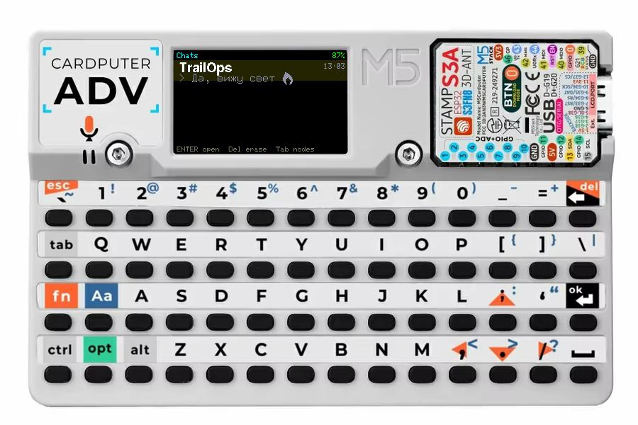

Onboard LoRa
Attach an M5Stack Cap LoRa-1262 and the Cardputer becomes a complete standalone Meshtastic node.
Pocket messenger · one device
M5Stack Cardputer ADV
A fast, keyboard-first Meshtastic client that boots straight into your conversations. Type, send, see delivery status — all on a pocket QWERTY device.

Browser installer
Use desktop Chrome or Edge and a data USB-C cable. The installer writes the firmware and its GNU Unifont glyph partition together.
Attach the LoRa antenna before powering a Cap LoRa-1262. Running its PA without an antenna can permanently damage it.
Back up your Meshtastic configuration first. A full erase removes settings and message history; use the official app's configuration export before continuing.
Connect directly to the computer without a hub. If the port does not appear, hold G0 / BOOT while connecting, then release.
Сначала подключите LoRa-антенну — питание усилителя без антенны может повредить кап. Перед полной очисткой сохраните конфигурацию Meshtastic.
Two ways to mesh
The messenger stays the same; only the radio path changes.
Attach an M5Stack Cap LoRa-1262 and the Cardputer becomes a complete standalone Meshtastic node.
Pocket messenger · one device
No cap required. Pair with a BLE-capable stock Heltec, T-Beam, RAK or other Meshtastic node and drive its radio over Bluetooth.
Your existing node · zero firmware changes
Built around conversations
Recent chats are home. Type to find a contact, press Enter to open, then write.
DMs and channels, delivery checks, replies, reactions, favourites and inline emoji.
Toggle Cyrillic input from the keyboard and render Unicode messages from the wider mesh.
Conversations survive reboots; older messages page back from a flash archive.
Find nodes by name and see signal, hop count, role and last-heard age in fixed columns.
Region, channels, radio, WiFi, MQTT, time and companion mode — no phone setup required.
The stock Meshtastic Client API remains available, including the official phone app when Bluetooth is free.
Release confidence
Every stable tag must pass host tests, sanitizers, both firmware builds and memory budgets before a radio-silent hardware gate flashes a trusted Cardputer, replays synthetic production-format traffic through the real decoder, verifies the UI and storage, reboots, and restores and verifies the exact production application bytes.
Other install paths
Find Meshtastic ADV in the Cardputer catalog. Its merged image already contains the firmware and Unicode font.
Catalog instructions →Download the merged image for a full flash, or use the factory image and place unifont.bin at 0x340000.
Troubleshooting
Use a data-capable cable and connect without a hub. Hold G0 / BOOT while plugging it in, then release and try Connect again.
Unplug and reconnect the cable. The ESP32-S3 can remain in its bootloader until it is power-cycled.
Install normally, then long-press ESC → Settings → Radio → Companion via BLE. Pair with any BLE-capable stock Meshtastic node and use its radio.
Long-press ESC and set the legal Region for your location plus your UTC offset. Restore other Meshtastic settings only from a backup you trust.